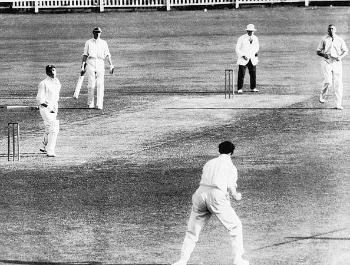
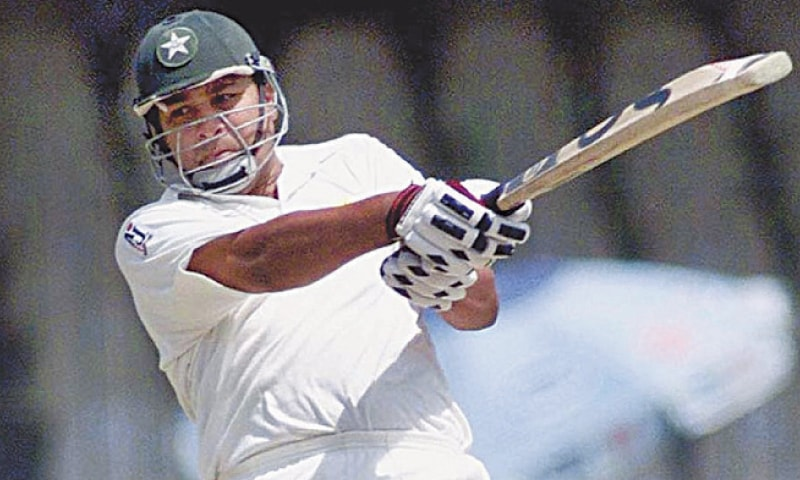
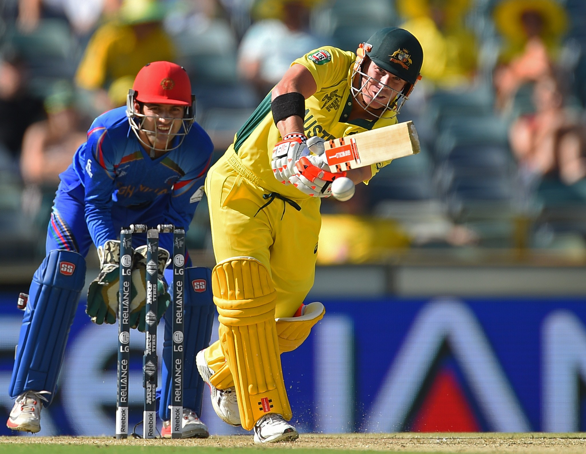
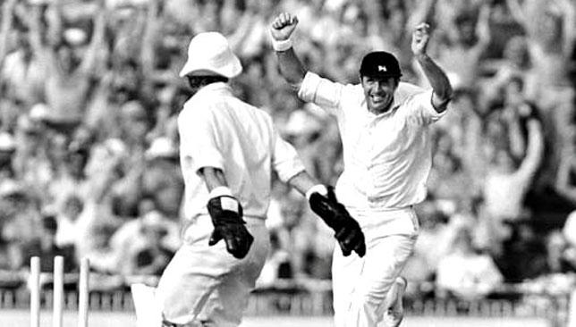
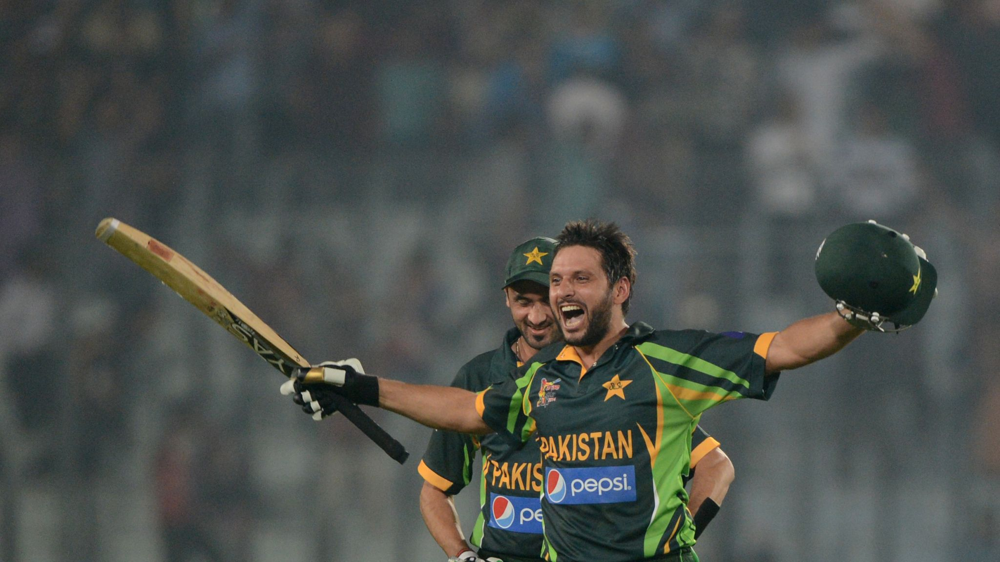
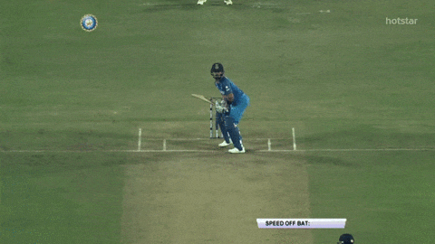

- Home Page
Cricket Facts
Popularity
Play Difference
Feedback
Below will show some great achievements ever accomplished in cricket.
Cricket World Records
Biggest Cricket Victory Triumphs By Runs
- England Beat Australia By 675 Runs (1928).
- Australia Beat England By 562 Runs (1934).
- Australia Beat South Africa By 530 Runs (1911).
Biggest Cricket Victory Triumphs By Innings

- England v.s. Australia (1938)
England Wins: Inns & 579 Runs
- Australia v.s. South Africa (2002)
Australia Wins: Inns & 360 Runs
- West Indies v.s. India (1958)
West Indies Wins: Inns & 336 Runs
- Australia v.s. England (1946)
Australia Wins: Inns & 332 Runs
- Pakistan v.s. New Zealand (2002)
Pakistan Wins: Inns & 324 Runs
One Day Records
Greatest Win Margin (By Runs)

- New Zealand v.s. Ireland (2008)
New Zealand Won By 290 Runs
- Australia v.s. Afghanistan (2015)
Australia Won By 275 Runs
- South Africa v.s. Zimbabwe (2010)
South Africa Won By 272 Runs
Greatest Win Margin (By Balls Remaining)

- England v.s. Canada (1979)
England Won: 277 Balls Remaining
- Sri Lanka v.s. Zimbabwe (2001)
Sri Lanka Won: 274 Balls Remaining
- Sri Lanka v.s. Canada (2003)
Sri Lanka Won: 272 Balls Remaining
- Nepal v.s. United States (2020)
Nepal Won: 268 Balls Remaining
- New Zealand v.s. Bangladesh (2007)
New Zealand Won: 264 Balls Remaining
Player Records
Most Sixes In Career

- Chris Gayle (West Indies): 551 Sixes
- Shahid Afridi (Pakistan): 476 Sixes
- Rohit Sharma (India): 440 Sixes
- Brendon McCullum (New Zealand): 398 Sixes
- MS Dhoni (India): 359 Sixes
First To 2000 Runs (2020 International)

- Babar Azam (Pakistan)
4 Years, 230 days
- Virat Kohli (India)
8 Years, 21 days
- Aaron Finch (Australia)
9 Years, 236 days
Most Career Runs

- Sachin Tendulkar (India): 34357 Runs
- Kumar Sangakkara (India): 28016 Runs
- Ricky Ponting
(Australia): 27483 Runs